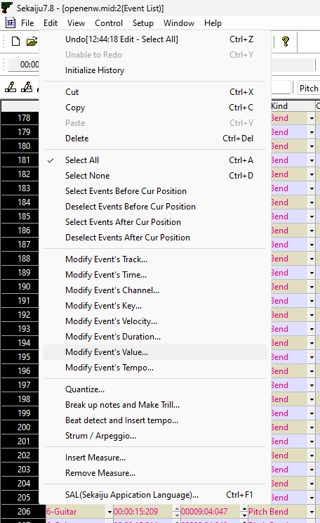

Weak MIDI Pitch Bends in FL Studio
The way FL Studio exports to midi files is fine for the most part, except when it comes to pitch bends. This becomes a problem when a fella like me wants to create midis for use in retro games, especially when it comes to crafting them for ADLIB/OPL chips.
Here is a simple pitch bend automation in FL Studio. The guitar should bend up a whole note. And it works just fine while composing inside FL Studio on a Midi Out.
Let’s export this song to a midi file and re-import it.
I coded a quick midi player with Allegro 4.2.3 and DJGPP and opened it in Dosbox-X. The pitch bend is weak! Sounds awful!
For a while, I accused several innocent pieces of software. But after a lot of googling and tinkering, it turns out it’s just how FL Studio assumes pitch bends. But the solution was simple enough.
With the help of a nifty program called Sekaiju, I opened the midi after exporting it from FL Studio, and I was able to show only the pitch events for the guitar track.
They looked a little low, and I wanted to crank them up! So after a quick Ctrl-a, I found a tool in the Edit menu called Modify Event’s Value…

I switched the Unit to Percent and unchecked everything but PitchBend in Target. I cranked the Amount to 1000.
All better! Those values are maxed!
Re-importing to FL Studio showed the pitch bend is correctly at 200 cents!
Sounds wonderful now! I love a good pitch bend.
This is one of those obscure problems with little helpful information on the internet, so I sincerely hope this helps someone out there.